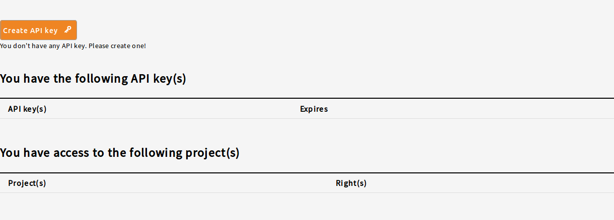

Gen3 Data Client¶
The gen3-client provides an easy-to-use, command-line interface for uploading and downloading data files to and from a Gen3 data commons from the terminal or command prompt, respectively. In some systems "download" may be restricted to only within a Gen3 Workspace. Note that Gen3 also comes with an SDK tool that can perform many of the same functions as the client for downloading along with many other features not found in the client. You can read more about the Python SDK tool here.
Installation¶
A binary executable of the latest version of the gen3-client should be downloaded from Github. Choose the file that matches your operating system (Windows, Linux, or macOS).
No installation is necessary. Simply download the correct version for your operating system and unzip the archive. The program is then executed from the command-line by running the command gen3-client <options>. For more detailed instructions, see the section below for your operating system.
Note: Do not try to run the program by double-clicking on it. Instead, execute the program from within the shell / terminal / command prompt. The program does not provide a graphical user interface (GUI) at this time; so, commands are sent by typing them into the terminal.
Mac OS X / Linux Installation Instructions¶
- Download the latest Mac OS X or Linux version of the gen3-client here.
- Unzip the archive.
- Add the unzipped executable to a directory, for example:
~/.gen3/gen3-client.exe. - Open a terminal window.
- Add the directory containing the executable to your Path environment variable by entering this command in the terminal:
echo 'export PATH=$PATH:~/.gen3' >> ~/.bash_profile. - Run
source ~/.bash_profileor restart your terminal. - Now you can execute the program by opening a terminal window and entering the command
gen3-client.
Windows Installation Instructions¶
- Download the Windows version of the gen3-client here.
- Unzip the archive.
- Add the unzipped executable to a directory, for example:
C:\Program Files\gen3-client\gen3-client.exe. - Open the Start Menu and type “edit environment variables”.
- Open the option “Edit the system environment variables”.
- In the “System Properties” window that opens up, on the “Advanced” tab, click on the “Environment Variables” button.
- In the box labeled “System Variables”, find the “Path” variable and click “Edit”.
- In the window that pops up, click “New”.
- Type in the full directory path of the executable file (for example,
C:\Program Files\gen3-client). - Click “Ok” on all the open windows and restart the command prompt if it is already open by entering
cmdinto the start menu and hitting enter.
Note: To download the latest version of the file from the command-line, use the following commands from your terminal:
Text Only# Mac OS: curl https://api.github.com/repos/uc-cdis/cdis-data-client/releases/latest | grep browser_download_url.*osx | cut -d '"' -f 4 | wget -qi -Text Only# Linux: curl https://api.github.com/repos/uc-cdis/cdis-data-client/releases/latest | grep browser_download_url.*linux | cut -d '"' -f 4 | wget -qi -
View the Help Menu¶
To check that your copy of the client is working and confirm the version, the tool can be run on the command-line in your terminal or command prompt by entering gen3-client. Typing this alone or gen3-client help will display the help menu. For help on a particular command, enter: gen3-client <command> help. Note that you must provide the full path of the tool in order for the commands to run, for example, ./gen3-client while working from the directory containing the client. Alternatively, you can add the location of the gen3-client executable to your shell’s PATH environment variable.
Configure a Profile with Credentials¶
Before using the gen3-client to upload or download data, the gen3-client needs to be configured with API credentials downloaded from the user’s data commons Profile:
- To download the “credentials.json” from the data commons, the user should start from that common’s Windmill data portal, followed by clicking on “Profile” in the top navigation bar and then creating an API key. In the popup window which informs user an API key has been successfully created, click the “Download json” button to save a local copy of the API key.

- From the command-line, run the
gen3-client configurecommand with the--cred,--apiendpoint, and--profileflags (see examples below).
Example Usage:
gen3-client configure --profile=<profile_name> --cred=<credentials.json> --apiendpoint=<api_endpoint_url>
Mac/Linux:
gen3-client configure --profile=demo --cred=~/Downloads/demo-credentials.json --apiendpoint=https://gen3.datacommons.io
Windows:
gen3-client configure --profile=demo --cred=C:\Users\demo\Downloads\demo-credentials.json --apiendpoint=https://gen3.datacommons.io
NOTE: For these user guides, https://gen3.datacommons.io is an example URL and can be replaced with the URL of other data commons powered by Gen3.
When successfully executed, this will create a configuration file, which contains all the API keys and URLs associated with each commons profile configured, located in the user folder:
Version 1.0.0+
Mac/Linux: /Users/demo/.gen3/gen3_client_config.ini
Windows: C:\Users\demo\.gen3\gen3_client_config.ini
Other older version
Mac/Linux: /Users/demo/.gen3/config
Windows: C:\Users\demo\.gen3\config
NOTE: These keys must be treated like important passwords; never share the contents of the
credentials.jsonand gen3-clientgen3_client_config.iniorconfigfile!
You should receive an error if you enter an incorrect API endpoint for your credentials. For example:
~> gen3-client configure --profile=demo --cred=~/Downloads/wrong-credentials.json --apiendpoint=https://nci-crdc-demo.datacommons.io
2019/11/19 11:58:15 Error occurred when validating profile config: Invalid credentials for apiendpoint 'https://nci-crdc-demo.datacommons.io': check if your credentials are expired or incorrect.
To confirm you successfully configured a profile with the correct authorization privileges, you can run the gen3-client auth command, which should list your access privileges for each project in the commons you have access to. For example:
~> gen3-client auth --profile=demo
2019/11/19 11:59:04
You have access to the following project(s) at https://nci-crdc-demo.datacommons.io:
2019/11/19 11:59:04 CPTAC [read read-storage]
2019/11/19 11:59:04 DCF [create delete read read-storage update upload write-storage]
Downloading data with the Data Client¶
Download a Single Data File Using a GUID¶
Files with a valid storage location in the file index database (AKA indexd) can be downloaded using the gen3-client download-single command by providing the file's object_id (AKA GUID or did).
For example, the indexd record for object_id "00149bcf-e057-4ecc-b22d-53648ae0b35f" points to a location in the GDC.
Required Flags: * --profile: The user profile specifying the api-endpoint and credentials. * --guid: The GUID (or "object_id" in Postgres or "did" in indexd) of the file.
Optional Flags: * --download-path: Specify the directory to store files in. * --filename-format: The format of filename to be used, including "original", "guid" and "combined" (default "original").
- --no-prompt: If set to true, no user prompt message will be displayed regarding the filename-format.
- --protocol: The protocol to use for file download. Accepted options are: "s3", "http", "ftp", "https", and "gs".
- --rename: If "--filename-format=original" is used, this will rename files by appending a counter value to its filename when files with the same name are in the download-path, otherwise the original filename will be used.
- --skip-completed: If set to true, the name and size of local files in the
download-pathare compared to the information in the file index database. If a local file in thedownload-pathmatches both the name and size, it will not be downloaded.
NOTE: The "--skip-completed" option also attempts to resume downloading partially downloaded files using a ranged download. That is, if a local file with the same name exists in the
download-path, but the size does not match what is in the file index, the client will attempt to resume the download where it left off.
Example Usage:
gen3-client download-single --profile=demo --guid=00149bcf-e057-4ecc-b22d-53648ae0b35f --no-prompt --skip-completed
Multiple File Download with Manifest¶
A download manifest can be generated using a Gen3 data common's "Exploration" tool. To use the "Exploration" tool, open the common's Windmill data portal and click on "Exploration" in the top navigation bar. After a cohort has been selected, clicking the "Download Manifest" button will create the manifest for the selected files. The gen3-client will download all the files in the provided manifest using the gen3-client download-multiple command.
NOTE: The download-multiple command supports multi-threaded downloads using the "--numparallel" option. While using this option will decrease time to download when downloading a batch of files, it is not recommended to use this option when trying to download extremely large files (50+ GB).
NOTE: If a download command is interrupted and results in partially downloaded files, the "--skip-completed" option can be used to attempt to resume downloading the partially downloaded files using a ranged download. The gen3-client will compare the file_size and file_name for each file in the "--download-path", and resume downloading any files in the manifest that do not match both.
Example Usage:
gen3-client download-multiple --profile=<profile_name> --manifest=<manifest_file> --download-path=<path_for_files>
gen3-client download-multiple --profile=demo --manifest=manifest.json --download-path=downloads
Finished downloads/63af95d3-98c3-4d6d-a6be-26398dbfc1d9 6723044 / 6723044 bytes (100%)
Finished downloads/b30531f6-9caa-4356-a95f-5f4d6a012913 6721797 / 6721797 bytes (100%)
Finished downloads/fbac9213-3564-422a-8809-119d4401d284 2744320 / 2744320 bytes (100%)
...
Finished downloads/bc40b861-c56d-490f-b4a4-f34d3c54de5f 2959360 / 2959360 bytes (100%)
Finished downloads/24d0be10-d164-48ad-aafa-9fcaac682df9 2570240 / 2570240 bytes (100%)
330 files downloaded.
Quick Start for Experienced Users or Cheat Sheet¶
MAC OS¶
- Download the latest version of the client:
Text Only
!curl https://api.github.com/repos/uc-cdis/cdis-data-client/releases/latest | grep browser_download_url.*osx | cut -d '"' -f 4 | wget -qi - !unzip dataclient_osx.zip !mv gen3-client /Users/demo/.gen3 !rm dataclient_osx.zip` - Configure a profile:
Text Only
gen3-client configure --profile=demo --cred=~/Downloads/demo-credentials.json --apiendpoint=https://gen3.datacommons.io` - Check your authorization privileges:
Text Only
gen3-client auth --profile=demo - Upload a file:
Text Only
gen3-client upload --profile=demo --upload-path=test.txt - Download a file:
Text Only
gen3-client download-single --profile=demo --guid=39b05d1f-f8a2-478c-a728-c16f6d0d8a7c --no-prompt
Uploading data with the Data Client¶
Uploading data assumes you have a functioning Gen3 system and all the appropriate privileges. Once you have installed and configured the data client you should be ready to upload files (i.e. unstructured data).
For the typical data contributor, the gen3-client upload command should be used to upload data files to a Gen3 Data Commons. The commands upload-single and upload-multiple are used only in special cases, for example, when a file or collection of files are uploaded to specific GUIDs after generating structured data records for the files. These two commands are described in further detail in sections 3 and 4 below.
When data files are uploaded to a Gen3 data common's object storage, they are assigned a unique, 128-bit ID called a GUID, which stands for "globally unique identifier". GUIDs are generated by the system software, not provided by users, and they are stored in the property object_id of a data_file's structured data.
When using the gen3-client upload command, a random, unique GUID will be generated and assigned to each data file that has been submitted, and an entry in the indexd database will be created for that file, which associates the storage location of the file with the file's object_id ("did" in the indexd record, see below for more details).
Options and User Input Flags¶
The following flags can be used with the gen3-client upload command:
| Flag name | Required? | Default value | Explanation | Sample usage |
|---|---|---|---|---|
| profile | Yes | N/A | The profile name that user wishes to use from the config file. | --profile=demo |
| upload-path | Yes | N/A | The directory or file in which contains file(s) to be uploaded. | --upload-path=../data_folder/ |
| batch | No | false | If set to `true`, gen3-client will upload multiple files simultaneously. The maximum number of file can be uploaded at a same time is specified by the `numparallel` option | --batch=true |
| numparallel | No | 3 | Number of uploads to run in parallel. Must be used in together with the `batch` option. | --numparallel=5 |
| include-subdirname | No | false | Include subdirectory names in file name. | --include-subdirname=true |
| force-multipart | No | false | Force to use multipart upload if possible. | --force-multipart=true |
Example of a single file upload:
~> gen3-client upload --profile=demo --upload-path=test.txt
2019/11/19 12:45:41 Finish parsing all file paths for "/Users/demo/Documents/test.txt"
The following file(s) has been found in path "/Users/demo/Documents/test.txt" and will be uploaded:
/Users/demo/Documents/test.txt
2019/11/19 12:45:41 Uploading data ...
test.txt 25 B / 25 B [=======================================================================================================================================] 100.00% 0s
2019/11/19 12:45:41 Successfully uploaded file "/Users/demo/Documents/test.txt" to GUID 1a82043e-02ec-4974-a803-7c0fd33ecfd7.
2019/11/19 12:45:41 Local succeeded log file updated
Submission Results
Finished with 0 retries | 1
Finished with 1 retry | 0
Finished with 2 retries | 0
Finished with 3 retries | 0
Finished with 4 retries | 0
Finished with 5 retries | 0
Failed | 0
TOTAL | 1
Example of uploading all files within an folder:
~/Documents> gen3-client upload --profile=demo --upload-path=test_dir
2019/11/19 13:12:47 Finish parsing all file paths for "/Users/demo/Documents/test_dir"
The following file(s) has been found in path "/Users/demo/Documents/test_dir" and will be uploaded:
/Users/demo/Documents/test_dir/test.doc
/Users/demo/Documents/test_dir/test.jpg
/Users/demo/Documents/test_dir/test_1.txt
/Users/demo/Documents/test_dir/test_2.txt
2019/11/19 13:12:48 Uploading data ...
test.doc 46 B / 46 B [=================================================================================================================================================================] 100.00% 0s
2019/11/19 13:12:48 Successfully uploaded file "/Users/demo/Documents/test_dir/test.doc" to GUID 7d1b41d9-002e-46d0-8934-6606d246ca30.
2019/11/19 13:12:48 Local succeeded log file updated
2019/11/19 13:12:48 Uploading data ...
test.jpg 50 B / 50 B [=================================================================================================================================================================] 100.00% 0s
2019/11/19 13:12:48 Successfully uploaded file "/Users/demo/Documents/test_dir/test.jpg" to GUID 59059e8d-29bf-4f8b-b9a4-2cd0ef2420f6.
2019/11/19 13:12:48 Local succeeded log file updated
2019/11/19 13:12:48 Uploading data ...
test_1.txt 30 B / 30 B [===============================================================================================================================================================] 100.00% 0s
2019/11/19 13:12:48 Successfully uploaded file "/Users/demo/Documents/test_dir/test_1.txt" to GUID 6f6686f1-45f2-4e8d-a997-a669b9419fd3.
2019/11/19 13:12:48 Local succeeded log file updated
2019/11/19 13:12:48 Uploading data ...
test_2.txt 27 B / 27 B [===============================================================================================================================================================] 100.00% 0s
2019/11/19 13:12:49 Successfully uploaded file "/Users/demo/Documents/test_dir/test_2.txt" to GUID d8ec2f5a-0990-495f-8192-ca2f037d6236.
2019/11/19 13:12:49 Local succeeded log file updated
Submission Results
Finished with 0 retries | 4
Finished with 1 retry | 0
Finished with 2 retries | 0
Finished with 3 retries | 0
Finished with 4 retries | 0
Finished with 5 retries | 0
Failed | 0
TOTAL | 4
Example of upload using wildcard. Here we specify *txt in the --upload-path to get only files with a "txt" extension in the "test_dir" directory:
~/Documents> gen3-client upload --profile=demo --upload-path=test_dir/*txt
2019/11/19 15:49:07 Created folder "/Users/demo/.gen3/logs/"
2019/11/19 15:49:07 Finish parsing all file paths for "/Users/demo/Documents/test_dir/*txt"
The following file(s) has been found in path "/Users/demo/Documents/test_dir/*txt" and will be uploaded:
/Users/demo/Documents/test_dir/test_1.txt
/Users/demo/Documents/test_dir/test_2.txt
2019/11/19 15:49:07 Uploading data ...
test_1.txt 30 B / 30 B [===============================================================================================================================================================] 100.00% 0s
2019/11/19 15:49:07 Successfully uploaded file "/Users/demo/Documents/test_dir/test_1.txt" to GUID 956890a9-b8a7-4abd-b8f7-dd0020aaf562.
2019/11/19 15:49:07 Local succeeded log file updated
2019/11/19 15:49:07 Uploading data ...
test_2.txt 27 B / 27 B [===============================================================================================================================================================] 100.00% 0s
2019/11/19 15:49:07 Successfully uploaded file "/Users/demo/Documents/test_dir/test_2.txt" to GUID 6cf194f1-c68e-4976-8ca4-a0ce9701a9f3.
2019/11/19 15:49:07 Local succeeded log file updated
Submission Results
Finished with 0 retries | 2
Finished with 1 retry | 0
Finished with 2 retries | 0
Finished with 3 retries | 0
Finished with 4 retries | 0
Finished with 5 retries | 0
Failed | 0
TOTAL | 2
Example using two wildcards in one path. Here we add test_*/ to the --upload-path to upload files in more than one directory, and then we add *.jpg to add only the files from those directories with a ".jpg" extension:
~/Documents> gen3-client upload --profile=demo --upload-path=./test_*/*.jpg
2019/11/19 15:53:12 Finish parsing all file paths for "/Users/demo/Documents/test_*/*.jpg"
The following file(s) has been found in path "/Users/demo/Documents/test_*/*.jpg" and will be uploaded:
/Users/demo/Documents/test_dir/test.jpg
/Users/demo/Documents/test_dir_2/test_2.jpg
2019/11/19 15:53:12 Uploading data ...
test.jpg 50 B / 50 B [=================================================================================================================================================================] 100.00% 0s
2019/11/19 15:53:13 Successfully uploaded file "/Users/demo/Documents/test_dir/test.jpg" to GUID 9bd009b6-e518-4fe5-9056-2b5cba163ca3.
2019/11/19 15:53:13 Local succeeded log file updated
2019/11/19 15:53:13 Uploading data ...
test_2.jpg 50 B / 50 B [===============================================================================================================================================================] 100.00% 0s
2019/11/19 15:53:13 Successfully uploaded file "/Users/demo/Documents/test_dir_2/test_2.jpg" to GUID 3d275025-8b7b-4f84-9165-72a8a174d642.
2019/11/19 15:53:13 Local succeeded log file updated
Submission Results
Finished with 0 retries | 2
Finished with 1 retry | 0
Finished with 2 retries | 0
Finished with 3 retries | 0
Finished with 4 retries | 0
Finished with 5 retries | 0
Failed | 0
TOTAL | 2
Local Submission History¶
The application will keep track of which local files have already been submitted to avoid potential duplication in submissions. This information is kept in a .JSON file in the "logs" directory under the same user folder as where the config file lives, for example:
Mac/Linux: /Users/demo/.gen3/logs/<your_config_name>_succeeded_log.json
Windows: C:\Users\demo\.gen3\logs\<your_config_name>_succeeded_log.json
Each object in the succeeded log file is a key/value pair of the full path of a file and the GUID it is associated with.
Example of a succeeded log JSON File:
{
"/Users/demo/test.gif":"65f5d77c-1b2a-4f41-a2c9-9daed5a59f14"
}
When you run a gen3-client upload command, the client will check the succeeded_log.json log file for the files found in the provided --upload-path. If a file in the --upload-path is found in the succeeded log file, it will be skipped. For example:
~/Documents> gen3-client upload --profile=demo --upload-path=test.txt
2019/11/19 16:00:42 Finish parsing all file paths for "/Users/demo/Documents/test.txt"
The following file(s) has been found in path "/Users/demo/Documents/test.txt" and will be uploaded:
/Users/demo/Documents/test.txt
2019/11/19 16:00:42 File "/Users/demo/Documents/test.txt" has been found in local submission history and has been skipped for preventing duplicated submissions.
Submission Results
Finished with 0 retries | 0
Finished with 1 retry | 0
Finished with 2 retries | 0
Finished with 3 retries | 0
Finished with 4 retries | 0
Finished with 5 retries | 0
Failed | 0
TOTAL | 0
In the rare case that you need to upload the same file again, the success log file will need to be moved, modified, renamed, or deleted. Alternatively, the file itself can be moved or renamed, as the information stored in the succeeded_log.json is the file's full path.
Working from the Command-line¶
This section contains some general notes about working from the command-line and includes information on how to set-up your command-line shell to make working with the gen3-client easier.
File Paths¶
When you create or download a file on your computer, that file is located in a folder (or directory) in your computer's file system. For example, if you create the text file example.txt in the folder My Documents, the "full path" of that file is, for example, C:\Users\demo\My Documents\example.txt in Windows or /Users/demo/Documents/example.txt in Mac OS X.
Present Working Directory¶
After opening a shell, command prompt or terminal window, you are "in" a folder known as the "present working directory". You can change directories with the cd <directory> command in either shell. To view your present working directory, enter the command echo $PWD in a Mac terminal or cd alone in the Windows command prompt.
You can list the contents of your present working directory by entering the command ls in the Mac terminal or dir in the Windows command prompt. These files in the present working directory can be accessed by commands you type just by entering their filenames: for example, cat example.txt would print the contents of the file example.txt in the Mac terminal if your present working directory is /Users/demo/Documents. However, if you're in a different directory, you must enter the "full path" of the file: for example, if your present working directory is the My Downloads folder instead of My Documents, then you would need to specify the full path of the file and enter the command type "C:\Users\demo\My Documents\example.txt", to print the file's contents in the Windows command prompt.
Updating the PATH Environment Variable¶
When working in your shell, you can define variables that help make work easier. One such variable is PATH, which is a list of directories where executable programs are located. By adding a folder to the PATH, programs in that folder can be executed from any other folder/directory regardless of the present working directory.
So, by adding the directory containing the gen3-client program to your PATH variable, you can run it from any working directory without specifying the "full path" of the program. Simply enter the command gen3-client, and you will run the program.
Note: In the case that you haven't properly added the client to your path, the program can still be executed from any directory with the following command:
/full/path/to/executable/gen3-client <options>. If you are working in the directory containing the executable, then/full/path/to/executableis simply./. So the command from the executable's directory would be./gen3-client.
Sending Parameters to Programs on Command-line¶
Most programs require some sort of user input to run properly. Some programs will prompt you for input after execution, while other programs are sent this input during execution as "flags" (AKA "arguments" or "options"). The gen3-client uses the latter method of sending user input as command arguments during program execution.
For example, when configuring a profile with the client, the user must specify the configure option and also specify the profile name, API endpoint, and credentials file by adding the flags --profile, --apiendpoint and --cred to the end of the command (see configuring a profile section above for specific examples).
Expired Token¶
Many commons have a limit to how long a token is good before it is expired. Once expired you may receive an error such
RequestNewAccessToken with error code 401
If this happens (and you are still authorized to access the data), you can download a new API token and re-create your profile using the previously used command.